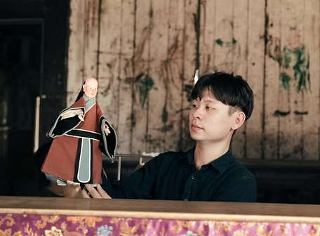

Media & Press
媒體報導與專訪
從劇團創立、作品發展到兒童布袋戲與傳統藝術推廣，收錄雷音劇坊於公開媒體、藝文平台、廣播與Podcast中的報導紀錄。
Featured coverage
近期精選
專訪、藝文報導與聲音節目，從不同角度記錄雷音的創作現場。


Archive · 2021—2026
報導紀錄




《看》雜誌 Watchinese
傳統結合創意 陳建霖創作《鯽仔魚娶親》掌中戲版｜雷音劇坊
《看》雜誌影音專題記錄陳建霖從戲偶服飾、偶頭製作到操偶創作的學習歷程，以及《鯽仔魚娶親》的創作實踐。
前往原始報導 ↗